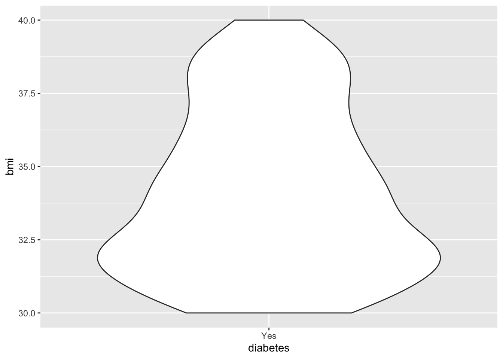

2 + 2[1] 4#Introduction
bla bla bla
#Methods and Results
bla bla
##Analysis
bla bla bla
#Discussion
bla bla
2 + 2[1] 4library(tidyverse)
library(NHANES)
nhanes_small <- read_csv(here::here("data/nhanes_small.csv"))nhanes_small# A tibble: 616 × 12
age sex bmi diabetes phys_active bp_sys_ave bp_dia_ave education
<dbl> <chr> <dbl> <chr> <chr> <dbl> <dbl> <chr>
1 528 male 31.4 Yes No 144 88 9 - 11th Grade
2 528 male 31.4 Yes No 144 88 9 - 11th Grade
3 768 female 27.2 Yes Yes 130 65 8th Grade
4 708 female 25.8 Yes No 150 0 8th Grade
5 708 female 25.8 Yes No 150 0 8th Grade
6 672 male 25.0 Yes No 86 54 8th Grade
7 936 female 22.6 Yes No 133 61 8th Grade
8 960 male 34.0 Yes No 125 56 9 - 11th Grade
9 792 female 28.6 Yes No 136 70 9 - 11th Grade
10 792 female 28.6 Yes No 136 70 9 - 11th Grade
# ℹ 606 more rows
# ℹ 4 more variables: logged_bmi <dbl>, old <chr>,
# mean_arterial_pressure <dbl>, young_child <chr>nhanes_small %>%
filter(!is.na(diabetes)) %>%
group_by(diabetes, education) %>%
summarise(
mean_age = mean(age, na.rm = TRUE),
mean_bmi = mean(bmi, na.rm = TRUE)
) %>%
ungroup() %>%
knitr::kable(caption = "Mean values of Age and BMI for each education and diabetes status.")| diabetes | education | mean_age | mean_bmi |
|---|---|---|---|
| Yes | 8th Grade | 768.1429 | 29.81024 |
| Yes | 9 - 11th Grade | 757.4815 | 29.91556 |
| Yes | College Grad | 738.2034 | 28.52763 |
| Yes | High School | 719.2558 | 31.21535 |
| Yes | Some College | 706.8387 | 30.25355 |
| Yes | NA | 200.0000 | 26.10389 |
| Diabetes Status | Education | Mean Age | Mean BMI |
|---|---|---|---|
| Yes | 8th grade | 768.1 | 29.8 |
| Yes | 9 - 11th grade | 757.5 | 29.9 |
| Yes | College grad | 738.2 | 28.5 |
| Yes | High school | 719.3 | 31.2 |
| Yes | Some college | 706.8 | 30.3 |
2 + 2[1] 4Cute kitten in Figure 1
BMI distribution in ?@fig-bmi-histo

nhanes_small %>%
#| fig-cap: "Distribution of BMI."
#| label: fig-bmi-histo
filter(bmi >= 30) %>%
ggplot(aes(x = bmi)) +
geom_histogram(na.rm = TRUE)
nhanes_small %>%
ggplot(aes(x = education)) +
geom_bar()nhanes_small %>%
filter(!is.na(diabetes)) %>%
ggplot(aes(x = diabetes)) +
geom_bar()
nhanes_small %>%
filter(!is.na(education)) %>%
ggplot(aes(x = education)) +
geom_bar()
nhanes_small %>%
filter(!is.na(diabetes)) %>%
ggplot(aes(x = diabetes)) +
geom_bar()
nhanes_small %>%
filter(!is.na(education)) %>%
ggplot(aes(x = education)) +
geom_bar()nhanes_small %>%
ggplot(aes(x = bmi, y = bp_sys_ave)) +
geom_hex(na.rm = TRUE) +
geom_smooth(na.rm = TRUE)nhanes_small %>%
filter(!is.na(education), !is.na(diabetes)) %>%
ggplot(aes(x = diabetes, fill = education)) +
geom_bar(position = position_dodge())nhanes_small %>%
filter(!is.na(diabetes), bmi >= 30) %>%
ggplot(aes(x = diabetes, y = bmi)) +
geom_violin(na.rm = TRUE)